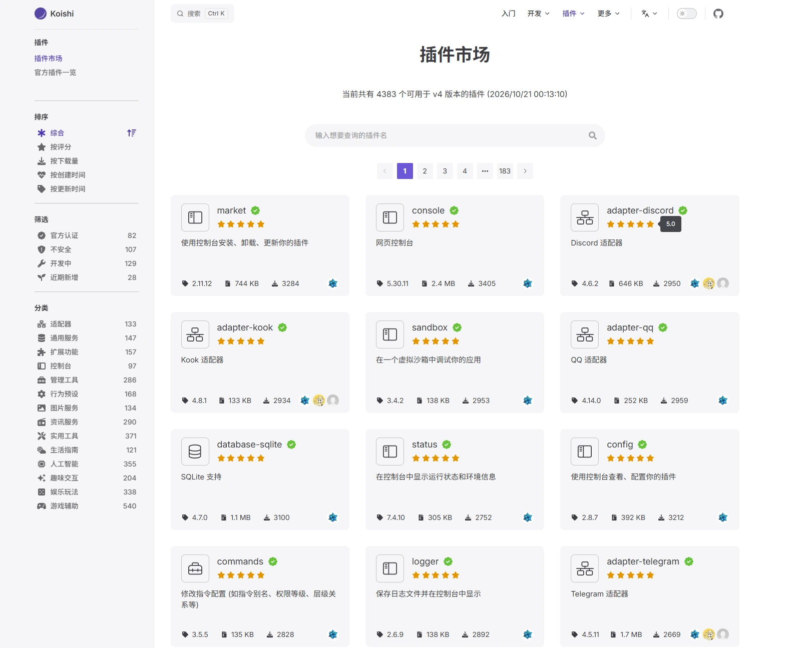

事件
EVENT
在事件管线上观察与拦截，发布方与订阅方之间不耦合。
emit 广播
waterfall 拦截
不知道谁在听
从聊天页面到智能工具
模型之外的工程，一层一层加上去
Agent = Model + Harness
左边是地图，右边是一次真实运行
前缀缓存：同样的开头，第二次就便宜了
PREFIX / NEW / REBUILD
每轮只在末尾追加新消息；从第 2 轮起，前面那段已经算过，可以按缓存价复用。
第 5 轮：窗口满了，从头部裁掉 user 1 / reply 1。 前缀在 system 之后就断了：只有 1 条仍命中缓存， 中间 6 条原本能命中，现在必须重算，末尾 1 条照常新增。
| 产品名 | 形态 | 核心能力 | 开源状态 | 特点 |
|---|---|---|---|---|
Claude CodeANTHROPIC |
终端 · IDE 桌面 · 浏览器 |
MCP、Skills、Hooks、子代理 | 闭源无公开仓库 | 模型厂商自研；权限确认贯穿每一步，四端共用同一套配置 |
CodexOPENAI |
CLI · IDE 桌面 · 云端 |
沙箱、审批、AGENTS.md、skills、hooks | Apache-2.0github.com/openai/codex | 本地 CLI 开源，另有云端 Codex Web 跑隔离环境 |
DeepSeek HarnessDSH |
CLI · Web 桌面 |
万物皆插件（Cordis）；模型、工具、日志、主循环都可替换 | MITgithub.com/deepseek-ai/deepseek-harness | developer preview；把「可替换」做到了循环这一层 |
ZCodeZHIPU |
CLI · 桌面 | skills、插件市场、MCP、hooks | 闭源无公开仓库 | 终端与桌面双形态，能力主要靠插件生态补齐 |
WorkBuddyTENCENT |
桌面工作台 | 自然语言下达、自主规划执行；连 IM / 文档 / 邮件 / 会议 / 知识库 | 闭源无公开仓库 | 办公垂类的 agent：循环与工具在，但面向的是职场任务而非代码 |
Gemini CLIGOOGLE |
终端 | 工具调用、MCP、可扩展命令 | Apache-2.0github.com/google-gemini/gemini-cli | 模型厂商官方开源 CLI，社区 fork 多（如 Qwen Code） |
OpenCodeANOMALY |
终端 | 多模型接入、终端 TUI、MCP | MITgithub.com/anomalyco/opencode | 社区驱动，与具体模型厂商解耦 |
出处：koishi.chat/zh-CN/about/history
QQ、飞书、Slack、Discord……一个框架，服务所有平台。
聊天回复、资源管理、开发者工具、管理界面——任一功能下线，机器人照常运行。
适配器、功能插件、网络工具、开发者工具、UI 界面——不同类型与能力的模块，在同一协议下工作。
社区共同开发，产品自迭代。插件来自不同作者，装在一起不能打架。
插件运行时的时空控制 时间上可撤回，空间上可声明
当组件被完全移除时，它造成的副作用能够被完全撤回， 系统运行态完全恢复到组件安装前的状态。
组件之间的依赖可以被声明，由运行时响应式地管理—— 依赖自动就位，无需手动编排激活与退位的顺序。
插件之间只有两条通道 事件不耦合，服务直接调
在事件管线上观察与拦截，发布方与订阅方之间不耦合。
直接调用别人的能力，不需要发布事件。
装载 tool-calc 时，运行时会先找出它依赖的插件，按依赖顺序逐个装配； 卸载时沿依赖链逆序回卷——整条链一次走完。
tool-admin
pending
tool-admin
pending
tool-admin
pending
tool-math + tool-fs
pending
4383 个插件 · 跨平台生态

{ 运行后生成 }
把「模型 → 工具 → 模型」封装成可复用的驱动器。换模型、换工具，循环本身不用重写。